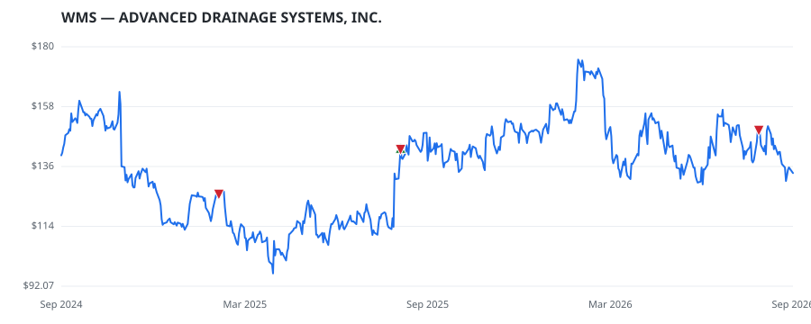

bullish · bearish · n/a — dots: price>SMA10 · SMA10>SMA50 · SMA50>SMA200 · up>down volume (20d)
Other · large cap
Members who bought WMS earned a dollar-weighted +0.0% from their disclosure dates, versus +0.0% for the S&P 500 over the same holding windows (+0.0% alpha).

▲ green = a disclosed purchase · ▼ red = a disclosed sale (plotted on disclosure date)
Advanced Drainage Systems Inc designs, manufactures and markets water management solutions in the stormwater and onsite wastewater industries, providing superior drainage solutions for use in the construction and agriculture markets. The company's products are used across a broad range of end markets and applications, including non-residential, residential, infrastructure and agriculture applications. It has two reportable segments: Stormwater and Wastewater. It derives the majority of revenue from the Stormwater segment, which manufactures and markets thermoplastic corrugated pipe and complem PLASTICS FOAM PRODUCTS · website
| Revenue | $3.1B | Net income | $428.8M |
|---|---|---|---|
| Operating income | $619.2M | Diluted EPS | $5.44 |
| Assets | $4.5B | Equity | $1.9B |
| Member | Chamber | Out-performer | Disclosed buys $ | Return on buys |
|---|---|---|---|---|
| Lisa McClain | house | — | $8K | +0.0% |
Disclosed $ figures are bracket midpoints — filings report ranges (e.g. $1,001–$15,000), not exact amounts.
| Fund | Fund alpha vs SPY | Position | % of book |
|---|---|---|---|
| Future Fund LLC | +4% | $5M | 1.3% |
Hedge data: SEC EDGAR 13F · ranked funds beat SPY in >50% of their quarters · fund alpha = mirror-portfolio return minus SPY.